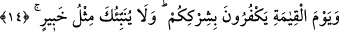

14. Eğer onları (putları) çağırırsanız, sizin çağırmanızı işitmezler. Faraza işitseler
bile, size cevap veremezler. Kıyâmet günü de sizin ortak koşmanızı reddederler.
(Bu gerçeği) sana, her şeyden haberi olan (Allah) gibi hiç kimse haber veremez.
“Eğer onları (putları)” yardım ve belayı def’etmek için “çağırırsanız” cansız
oldukları için “sizin çağırmanızı işitmezler. Faraza işitseler bile,” dilleri olmadığı
için yahut fayda sağlamaktan tamamen âciz oldukları için “size cevap veremezler.” Zira
kendisine faydası olmayanın başkasına faydası olmaz. Kâşifî der ki: “Faydalara
eriştirmeye ve kötülükleri def’etmeye kâdir değillerdir.”
Bahru’l-ulûm’da der ki, burada putlardan bahseden “__WORD__ fiili akıl sâhipleri için
kullanılan “__WORD__” ile çoğul yapılmıştır. Çünkü müşrikler kendi cehâlet ve
beyinsizliklerinden dolayı putları temyiz ve akıl sahibi olarak niteliyorlardı. Yine
burada putlara akıl sahipleri için kullanılan “cevap verme” ve “duyma” fiilleri de isnâd
edilmiştir. Aslında burada Allah’tan başka cinler, insanlar ve put olan bütün mabudlar
murad edilmiş olabilir. Ne var ki putlar galebe çaldığı için yalnızca onlar zikredilmiştir.
“Kıyâmet günü de sizin ortak koşmanızı” ve onlara ibadet etmenizi, “siz bize ibadet
etmiyordunuz” (Yûnus 10/28) sözleriyle “reddederler.” Ey Muhammed! (s.a.) “(Bu
gerçeği) sana, her şeyden haberi olan (Allah) gibi hiç kimse haber veremez.” Zira
bütün işlerin iç yüzünü bilen yalnızca O’dur; diğer haber verenler değil. Bu ifâdeden
maksad, Allah Teâlâ’nın haber verdiği müşriklerin ilâhlarının hallerinin gerçekliğini ve
onların duâ ettikleri ilahların yokluğunu tespit ve beyandır. Lübâb müellifi şöyle der:
“Misl’in Allah’a izâfeti câiz değildir. Bu durumda bu Arap kelâmında yaygınlaşmış bir
mesel olup sözü güvenilir olan kimseden haber verilirken kullanılır.” Zerrûkî der ki,
“habîr” demek başkalarının ancak özel tercih ve bir takım hile ve teşebbüslerle
ulaşabileceği ince ve gizli işleri iyi bilen demektir. Gazzâlî de der ki, “habîr” gizli
haberlerin kendisinden uzak olmadığı mülk ve melekût aleminde hiçbir şey câri olmaz,
bir zerre hareket etmez, sakin olmaz, bir canlı sallanmaz yahut durmaz ki bütün bunların
haberleri o habîr olan zat nezdinde mâlûm olmasın.
Bostân’da der ki:
Bilgisi, olmamış şeyleri görür.
Lütfu, söylenmemiş sırlardan haberdar olur.
Kulun bundan nasibi, bedeninde ve kalbinde cârî olan hile, hıyânet, dünyanın peşinde
koşma, şerri gizleyip hayrı ızhâr etme, ihlâs ve samimiyeti izhar ederek güzel gözükme,
ihlâs ve iflâsı izhâra tahammül etme gibi durumlardan haberdar olmasıdır. Yine kişi bu
gibi gizliliklerden ancak tevhîdi izhâr edip hakikatini elde etmekle ve şirk ve şirkle
ilgili unsurlara ilgi duymaktan ve meyletmekten yüz çevirerek Allah’a ulaşmakla